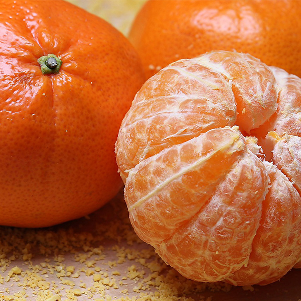

栽培みかんの紹介

温州みかん
愛媛県内で一番多く栽培されているのが「温州みかん」です。温室みかんを含めると出荷はほぼ一年を通して行われており、果皮・袋ともに薄く、食べやすいのが特徴です。

伊予柑（いよかん）
「伊予」は愛媛県の昔の呼び方で、伊予で盛んに育てられていたことから、伊予柑（いよかん）の名前になりました。甘みに加えて酸味もあり、爽やかな風味を味わうことができます。現在も愛媛県を中心に育てられている品種です。爽やかな香りとジューシーな味わい

紅まどんな®
紅（べに）まどんな®の特長といえば、なんといっても食感。果肉はまるでゼリーのようにプルプルなめらかです。酸味も少なく、濃厚な甘みの果汁が溢れてきます。中晩柑の中でも登場時期が早く、11月の中旬ごろから出荷が始まります。見た目の良さ、味の良さ、そして年末という時期の良さから、贈答品としても人気があります。